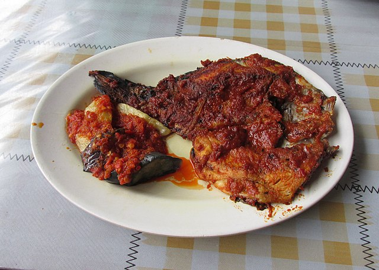
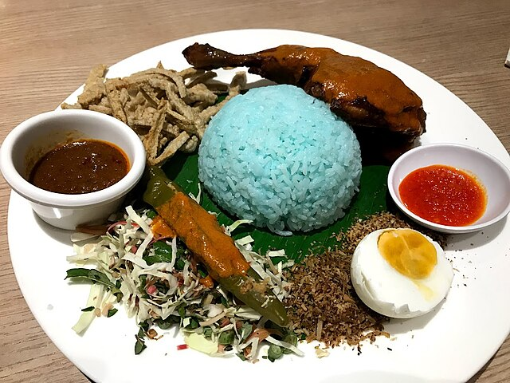
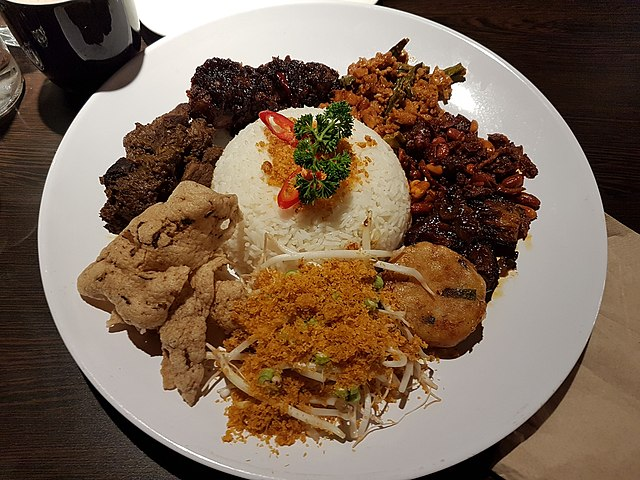
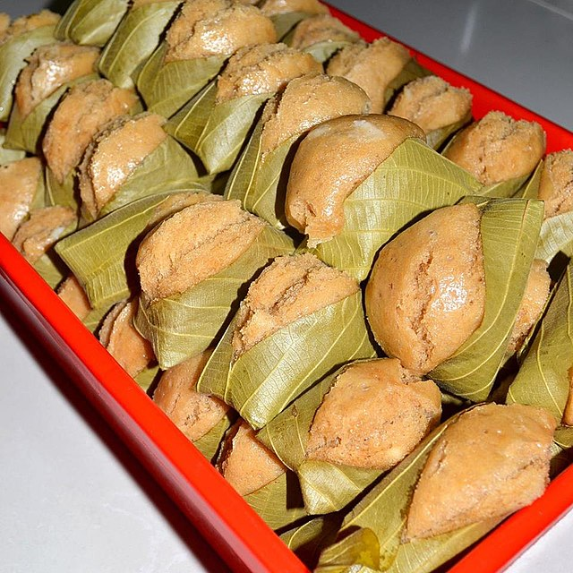

1. Hokkien Mee

Description
Penang's Hokkien Mee, also known as prawn mee, is a flavourful noodle soup that originated from Penang. The soup base is simmered with prawns and pork ribs, giving it a rich and aromatic taste. It is a beloved hawker dish enjoyed across Malaysia. Although Hokkien Mee in Penang refer to prawn mee but in Kuala Lumpur the same name refer others type of mee.
Common Ingredients
- Thick yellow noodles
- Prawns
- Pork slices
- Boiled egg
- Sambal Chilli
- Water spinach
- Fried shallots
Preparation
The broth is made by simmering prawn shells and pork bones for hours, creating a deep, savory taste. The noodles are topped with prawns, pork slices, vegetables, and chili sambal before serving.
2. Ikan Bakar
Description
Ikan Bakar which translates to "grilled fish", is one of Malaysia's Common seafood dishes. In Perlis, its flavor is haped by the region's mix of Malay, Chinese, and Thai influence. The fish is marinated in a blend of spices, sauces, and chili paste, then grilled over hot charcoal. This method will prodoce a smoky aroma while keeping the flesh tender and juicy. Each Malaysian stet has its own special version of Ikan Bakar. However, the Perlis style stands out due to its use of local chili sauce that make the dishes become spicier and tangier compared to other versions.
Common Ingredients
- Fresh fish (usually mackerel, stingray, or seabass)
- Red chilies, garlic, shallots
- Salt and pepper
- Light soy sauce and oyster sauce
- Fish sauce or Thai chili sauce
- Perlis local chili sauce (signature flavor)
Preparation
The fish is cleaned and marinated with a blend of spices, sauce, and chili paste. It is then wrapped in banana leaves or placed directly on a grill over charcoal fire. The slow grilling process infuses the fish with the smoky fragrance while keeping inside moist and juicy.
3. Dodol

Description
Dodol is a beloved traditional sweet in Malaysia, especially popular in Kedah where it is prepared during festive occasions such as Hari Raya and weddings. Traditionally, dodol can be stored for weeks without spoiling, making it a perfect festive snack to share with visitors.This chewy, sticky delicacy is made from a mixture of coconut milk, palm sugar, and rice flour then cooked gently by just using the low fire for several hours. The process need the constant stirring to ensure the smooth, glossy, toffee-like texture taht makes dodol special.
Common Ingredients
- Coconut milk
- Palm sugar (gula melaka)
- Rice flour (sometimes glutinous rice flour is used)
- A pinch of salt
Preparation
The ingredients are mix in a large wok and cooked over slow heat. The mixture is stirred without stopping for a few hours to prevent burning and to allow it to become thicken. Once it reaches the right consistency, the dodol becomes glossy and elastic. After cooling, it is cut into small bite-sized pieces and wrapped for serving.
4. Hainanese Chicken Rice

Description
Hainanese Chicken Rice is one of the most iconic dishes in Perak, inspired by the culinary traditions of Hainan, China. The chicken is gently poached to keep the meat to be tender and juicy, then sliced and served with rice cooked in chicken broth and garlic. A flavourful chili sauce and ginger paste are often served on side and sometimes there also a soup served on side.
Common Ingredients
- Kampung chicken (free-range chicken)
- Rice (cooked with chicken broth, garlic, and ginger)
- Celery or cucumber slices
- Chili sauce and soy sauce(for dipping)
Preparation
The chicken is poached in seasoned broth, then cooled before slicing. The rice is cooked in chicken fat and broth for fragrance. Finally, it is served with chili sauce, soy sauce, and light soup made from the same broth.
5. Nasi Kerabu
Description
Nasi Kerabu is a traditional dish deeply rooted in Kelantanese culture, easily recognizable by its unique blue-coloured rice, which is dyed with butterfly pea flowers(bunga telang). The name "kerabu" means a type of Malay salad, referring to the fresh herbs served with the rice. The rice is with fresh herbs, vegetables, salted egg, fish crackers, and coconut-based sauces.
Common Ingredients
- Blue rice
- Local herbs and vegetables
- Salter egg
- Grated coconut and fish flakes
- Fried chicken or grilled fish (optional)
Preparation
Butterfly pea flowers are boiled to extract natural coloring, which is then mixed with rice during cooking. The rice is plated with fresh herbs, coconut, and side dishes. Chili paste (sambal) adds spiciness.
6. Pulut Panggang

Description
Pulut Panggang is a beloved street snack in Terengganu, made from glutinous rice filled with a savory or slightly sweet mixture, then wrapped in banana leaves and grilled over charcoal. The grilling process gives the rice a smoky aroma while keeping the inside soft and flavorful.Futhermore, the grilling process makes the banana leaf slightly burnt, which enhances the smoky fragrance. Pulut panggang also a famous snack for evening tea in Terengganu.
Common Ingredients
- Glutinous rice
- Banana leaves (for wrapping)
- Coconut, dried shrimp, chili, or meat (filling)
- Salt
- Sugar
Preparation
TThe glutinous rice is steamed until cooked, then filled with a coconut-spiced mixture. The rolls are wrapped in banana leaves, pinned with small sticks, and grilled until slightly charred outside.
7. Nasi Kebuli

Description
Nasi Kebuli is a rich and fragrant rice dish in Pahang, prepared with coconut milk and a blend of spices such as cumin, ginger, and garlic. Unlike plain white rice, Nasi Kebuli is infused with flavor during the cooking process, making it a hearty and satisfying dish. This dishes is influenced by Middle Eastern cooking, brought by traders centuries ago. It is often enjoyed during gatherings or festive occasions. It is less known outside of Pahang, making it a unique regional specialty.
Common Ingredients
- Rice
- Coconut milk
- Spices: cumin, ginger, garlic, onion
- Salt, sugar, and cooking oil
- Chicken for added flavor (optional)
Preparation
Rice is cooked with coconut milk and spices, either in a rice cooker or steamed. Protein such as chicken or beef can be added, but even on its own the rice is rich and aromatic. Some families add raisins or fried shallots for extra fragrance and sweetness.
8. Nasi Ambeng
Description
A communal Javanese-Malay dish widely enjoyed in Selangor. It is served on a large tray, featuring steamed white rice surrounded by various side dishes. It often being enjoyed by group of people that symbolizes community spirit and family bonding, reflecting Javanese cultural values. Therefore, the dishes is served during weddings, religious gatherings, and festive occasions most the time.
Common Ingredients
- Rice
- Fried noodles
- Chicken rendang
- Fried chicken
- Sambal
- Serunding
- Vegetables
Preparation
Rice is steamed until fluffy, while side dishes such as rendang, fried chicken, sambal, and serunding are cooked separately with spices and coconut milk. Each dish is prepared in advance before being placed together with the rice.
9. Kuih Apam Johol
Description
Kuih Apam Johol is a cherished traditional cake from the town of Johol in Negeri Sembilan. This steamed delicacy is instantly recognizable by its unique presentation, wrapped in the fragrant leaves of the rambai tree, which imparts a subtle, aromatic essence to the cake during the cooking process. The cake itself is soft, spongy, and slightly chewy with a deep, caramelized sweetness from gula melaka (palm sugar).
Common Ingredients
- Rice flour
- Palm sugar (gula Melaka)
- Thick coconut milk
- Yeast (for fermentation)
- Rambai leaves (for wrapping)
Preparation
The preparation is a patient art. A batter is made from rice flour, coconut milk, yeast, and water, which is then left to ferment for several hours until it becomes slightly bubbly. Melted gula melaka is stirred in to sweeten and colour the batter. The fermented batter is then carefully poured into small cups made of folded rambai leaves. These leaf cups are placed in a steamer and cooked until the cakes are firm and springy to the touch.
10. Popiah Basah

Description
Popiah Basah, or "wet spring roll," is a beloved Malaysian snack, particularly iconic in Melaka. Unlike its fried counterpart, popiah basah features a soft, tender, and ultra-thin wheat flour skin that is served fresh and unfried. The "wet" name comes from the final slathering of thick, sweet sauce (usually a hoisin-peanut mix) and a dash of chili paste, making it a juicy, messy, and utterly delicious handheld meal.
Common Ingredients
- Popiah skins (thin wheat crepes)
- Jicama (bangkuang) and carrots
- Firm tofu and prawns
- Lettuce
- Hard-boiled eggs
- Crushed peanuts, fried garlic
- Sweet hoisin-like sauce and chili paste
Preparation
The filling is made by slowly stewing julienned jicama and carrots with garlic, soy sauce, and pepper until soft and flavorful. The popiah skin is lightly steamed to make it pliable. Each skin is laid flat, spread with sauce, and layered with lettuce, the warm jicama filling, tofu, prawns, egg, and a sprinkle of peanuts and fried garlic. It is then neatly folded into a tight, cylindrical roll and eaten immediately.
11. Mee Bandung Muar

Description
Hailing from the royal town of Muar in Johor, Mee Bandung is a hearty noodle soup renowned for its rich, complex, and vividly orange-red broth. Despite its name ("Bandung" meaning paired or mixed), it is not from the city of Bandung in Indonesia. The broth is a masterful blend of flavours, creating a thick gravy from a base of ground dried shrimp, chilies, and spices. The dish is typically served with yellow noodles, topped with prawns, boiled eggs, green vegetables, and sometimes sliced beef, making it a complete and satisfying meal.
Common Ingredients
- Yellow noodles
- Dried shrimp
- Shallots, garlic, ginger
- Dried chilies
- Prawns, hard-boiled eggs, green vegetables
- Tomato paste or ketchup, soy sauce
Preparation
The soul of the dish is the rempah (spice paste), which includes dried shrimp, shallots, garlic, ginger, and dried chilies, pounded or blended until fine. This paste is fried in oil until fragrant. Water or stock is added, followed by seasonings like tomato sauce, soy sauce, and sugar to create the balance of flavours. The gravy is thickened with a cornstarch slurry. It is then poured over blanched noodles and arranged toppings like poached prawns, hard-boiled eggs, and greens.
12. Kuih Penjaram

Description
Kuih Penjaram is a traditional favourite among the Bruneian Malay communities in Sabah. This sweet treat is instantly recognizable by its unique flying saucer or UFO shape—a small, round cake with a crisp, lacy outer edge and a soft, slightly dense center. It has a delightful contrast in textures: crispy on the outside and tender on the inside.It is a classic Malaysian kuih often sold by street vendors in the afternoon, perfect with a cup of coffee or tea.
Common Ingredients
- Rice flour or a mix of flours
- Thick coconut milk
- Sugar
- Water
- Salt
Preparation
A simple batter is made from a mixture of rice flour, wheat flour, or sometimes tapioca flour, combined with coconut milk, sugar (often palm sugar for colour), and a pinch of salt. The special mold is heated in oil. The batter is poured into the hot mold and fried until the edges are golden brown and crispy, while the center remains soft and cooked through. A small skewer is used to deftly remove the cake from the mold.
13. Hinava

Description
Hinava is a traditional delicacy of the Kadazan-Dusun people of Sabah, often described as the indigenous ceviche or fish salad.The acid denatures the proteins in the fish, firming its texture and turning it opaque white. It is mixed with finely sliced bitter gourd, ginger, chili, and red onions, and often garnished with grated bamboo shoot.
Common Ingredients
- Fish (Mackerel, Spanish Mackerel, or Sardines)
- Calamansi limes
- Bird's eye chilies
- Ginger, red onions
- Bitter gourd
- Salt
Preparation
Fresh fish is filleted, skinned, and diced into small cubes. The fish is then thoroughly mixed with calamansi lime juice and left to marinate for a few minutes until the flesh becomes firm and white. The marinated fish is then drained and combined with all the other finely sliced or grated ingredients. It is seasoned with salt and sometimes a little sugar to balance the acidity.
14. Kolo Mee

Description
Kolo Mee is the quintessential noodle dish of Sarawak, beloved for its simplicity and depth of flavour. It features springy egg noodles that are blanched and then tossed ("koloed") in a savoury seasoning blend of light soy sauce, lard or shallot oil, and vinegar. The magic is in the mixing, ensuring each strand of noodle is coated in the fragrant, savoury oil. In Sarawak, it is perfectly normal to start the day with a hearty plate of Kolo Mee, often paired with a cup of local coffee.
Common Ingredients
- Springy egg noodles
- Minced pork
- Char Siu
- Light soy sauce
- Vinegar
- Lard or shallot oil
- Crispy fried shallots
Preparation
The egg noodles are briefly blanched in boiling water to achieve a springy, al dente texture and then drained well. In a bowl, the hot noodles are tossed vigorously with a precise mix of seasonings such as light soy sauce for saltiness, a touch of vinegar for a slight tang, and a generous spoonful of fragrant lard or shallot oil. It is then topped with pre-cooked minced pork and sliced char siu.
15. Kompia

Description
Kompia is a direct link to the Foochow (Fuzhou) heritage of the early settlers in Sibu, Sarawak. Introduced by Foochow immigrants, this round, flat bread has a chewy, dense texture and a slightly charred, flour-dusted exterior from being baked in a traditional charcoal-fired clay oven (tandoor). It is famously hollow on the inside, creating a perfect pocket for various fillings.
Common Ingredients
- Wheat flour
- Water
- Yeast
- Sugar
- Salt
Common Fillings
- Minced pork with scallions
- Fried garlic in lard
- Sweet grated coconut
- Red bean paste
- Peanut crumbs
Preparation
A simple dough is made from flour, water, yeast, and a little sugar. After proofing, the dough is divided into small balls, which are then flattened into discs. A small hole is traditionally poked through the center. The discs are stuck to the inner wall of a very hot tandoor oven and baked until they puff up and develop a charred, blistered exterior. For filled versions, the dough may be wrapped around a filling before baking.